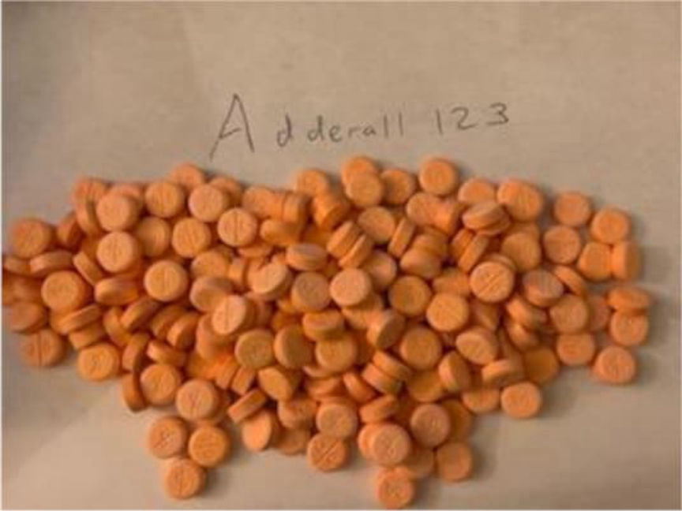
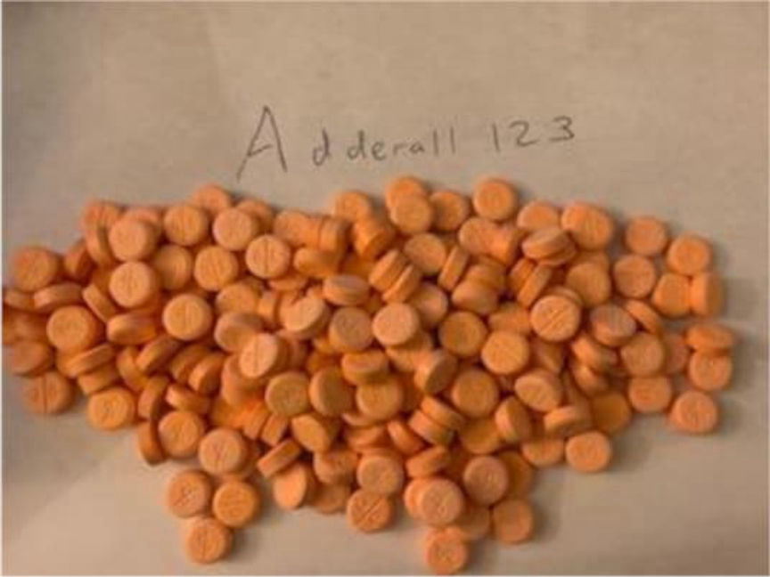

Counterfeit Adderall Pills Vendor "Adderall123" Sentenced
~2 min read | Published on 2024-01-25, tagged Darkweb-Vendor, Sentenced using 289 words.
A San Francisco man was sentenced to 18 months in prison for participating in the distribution of counterfeit Adderall pills through multiple dark web marketplaces.

Tony Tan, 28, oversaw the distribution of large quantities of counterfeit Adderall pills that contained methamphetamine. Tony, his brother, Andrew Tan, and other accomplices distributed the drugs through the "Adderall123" vendor profile on several dark web marketplaces, including White House Market, Torrez, ASAP, and Empire Market.
The Drug Enforcement Administration (DEA) and the United States Postal Inspection Service (USPIS) launched investigations into Adderall123 in April 2021. The investigators made several undercover purchases from the vendor during the investigations.
The investigators sent the pills received from the vendor to a lab for testing. The investigators reportedly found a fingerprint on one of the pills. The fingerprint tested positive for Andrew Tan.
The investigators also set up surveillance at multiple post offices in San Francisco used by Adderall123 to mail drug packages. The investigators identified Tony and Andrew as the mailers of the drug packages.
On November 12, 2021, the investigators seized two packages mailed by Tony Tan. The packages contained approximately 640 Adderall pills. Tests revealed that the pills contained a total of approximately 11.35 grams of methamphetamine.
The investigators arrested Tony and Andrew in April 2022. They were each charged with one count of possession with intent to distribute 5 grams or more of methamphetamine. Tony pleaded guilty to the charge in May 2023.
On January 24, 2024, Judge Richard Seeborg sentenced Tony to one year and six months in prison followed by three years of supervised release. Judge Seeborg also ordered Tony to forfeit $17,744 cash. Tony will also forfeit undisclosed amounts of Ethereum, Bitcoin, and Litecoin, seized from his wallets.

The counterfeit Adderall pills sold by Adderall123
Tony Tan, 28, oversaw the distribution of large quantities of counterfeit Adderall pills that contained methamphetamine. Tony, his brother, Andrew Tan, and other accomplices distributed the drugs through the "Adderall123" vendor profile on several dark web marketplaces, including White House Market, Torrez, ASAP, and Empire Market.
The Drug Enforcement Administration (DEA) and the United States Postal Inspection Service (USPIS) launched investigations into Adderall123 in April 2021. The investigators made several undercover purchases from the vendor during the investigations.
The investigators sent the pills received from the vendor to a lab for testing. The investigators reportedly found a fingerprint on one of the pills. The fingerprint tested positive for Andrew Tan.
The investigators also set up surveillance at multiple post offices in San Francisco used by Adderall123 to mail drug packages. The investigators identified Tony and Andrew as the mailers of the drug packages.
On November 12, 2021, the investigators seized two packages mailed by Tony Tan. The packages contained approximately 640 Adderall pills. Tests revealed that the pills contained a total of approximately 11.35 grams of methamphetamine.
The investigators arrested Tony and Andrew in April 2022. They were each charged with one count of possession with intent to distribute 5 grams or more of methamphetamine. Tony pleaded guilty to the charge in May 2023.
On January 24, 2024, Judge Richard Seeborg sentenced Tony to one year and six months in prison followed by three years of supervised release. Judge Seeborg also ordered Tony to forfeit $17,744 cash. Tony will also forfeit undisclosed amounts of Ethereum, Bitcoin, and Litecoin, seized from his wallets.